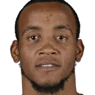

Played 3 seasons for 4 teams; his teams went 29–36 in his games.
Jump to: Record by opponent · Season by season · Teammate help
Compare Anthony Roberson with…
Final NBA finish, season by season
Title Finals Other playoffs Missed playoffs. #1 = champion; the dashed line is last place that season. Each point opens that season's final standings.
All 30 teams ranked in 2006-07, his best finish (#7)Teammate help
 Pau Gasol1.01 season
Pau Gasol1.01 season Mike Miller0.51 season
Mike Miller0.51 season
Monta Ellis0.21 season
Career
Career records (W–L, W − L, with and without) include 2026-27 games through Nov. 23, 2026; season counts and finishes are through 2025-26. Each card opens its board in the same scope. How we count.

Latest completed seasons
Season by season
Newest first; every header sorts. Final NBA finish is the team's rank among all teams that season (#1 = champion) and opens that season's standings. "Without him" uses the team-season window; the span line counts only the games between his first and last game for the team.
| 2008-09 | #23 of 30 | 32–50 39.0% | Missed playoffs | 23 of 82 | 8–15 34.8% | 16–18 47.1%span: 12–16, gap −8.1 | −12.3 | |
| 2008-09 | #14 of 30 | 41–41 50.0% | Lost 1st round 3–4 | 6 of 82 | 3–3 50.0% | 15–9 62.5%span: 1–2, gap +16.7 | −12.5 | |
| 2006-07 | #7 of 30 | 42–40 51.2% | Lost conf semis 1–4 | 20 of 82 | 7–13 35.0% | 35–27 56.5%span: 7–2, gap −42.8 | −21.5 | |
| 2005-06 | #9 of 30 | 49–33 59.8% | Lost 1st round 0–4 | 16 of 82 | 11–5 68.8% | 38–28 57.6%span: 30–23, gap +12.1 | +11.2 |
On/off, starts and close games
From the lineup data, 1996-97 on. On/off is net points per 100 possessions with him on the floor minus off, a different unit from the win-rate gaps. Started and off the bench are team records in those games; close games are those within 5 points in the last 5 minutes with him on the floor.
| 2008-09 | −8.1 | N/A | 8–15 34.8% | 0–2 0.0% | |
| 2008-09 | +11.1 | N/A | 3–3 50.0% | N/A | |
| 2006-07 | −13.2 | 0–1 0.0% | 7–12 36.8% | 0–4 0.0% | |
| 2005-06 | −7.1 | N/A | 11–5 68.8% | 1–0 100.0% |
Teammate help by season
Two separate numbers per season, each with every teammate that adds to it. Help this season = Teammates Score points for honors won that season by teammates who shared a game with him. Help coming in = the same teammates' honors from the season before. How help works.
- 2008-09
 New YorkHelp this season: 0, no honored teammate
New YorkHelp this season: 0, no honored teammate - 2008-09
 Chicago
Chicago
 Derrick Rose ROYAll-Rookie 1st0.756 g
Derrick Rose ROYAll-Rookie 1st0.756 g
Help this season: 0.75 = 0.75 Derrick Rose
More: help coming in and other teammates
Help coming in (teammates' honors the season before): 0
Other teammates (no honors that season): Ben Gordon 6 g, Kirk Hinrich 6 g, John Salmons 6 g, Aaron Gray 6 g, Joakim Noah 6 g, Tyrus Thomas 6 g, Brad Miller 6 g, Lindsey Hunter 3 g, Tim Thomas 3 g, Linton Johnson 2 g, Luol Deng 1 g
- 2006-07
 Golden State
Monta Ellis MIP0.2520 g
Golden State
Monta Ellis MIP0.2520 g
Help this season: 0.25 = 0.25 Monta Ellis
More: help coming in and other teammates
Help coming in (teammates' honors the season before): 0
Other teammates (no honors that season): Andris Biedrins 20 g, Mike Dunleavy 20 g, Matt Barnes 19 g, Mickael Pietrus 17 g, Baron Davis 17 g, Keith McLeod 14 g, Troy Murphy 14 g, Jason Richardson 13 g, Adonal Foyle 11 g, Patrick O'Bryant 8 g, Ike Diogu 6 g, Dajuan Wagner 1 g
- 2005-06
 Memphis
Pau Gasol All-Star115 gMike Miller Sixth Man0.513 g
Memphis
Pau Gasol All-Star115 gMike Miller Sixth Man0.513 g
Help this season: 1.5 = 1 Pau Gasol + 0.5 Mike Miller
More: help coming in and other teammates
Help coming in (teammates' honors the season before): 0
Other teammates (no honors that season): Lorenzen Wright 16 g, Hakim Warrick 16 g, Dahntay Jones 15 g, Shane Battier 15 g, Lawrence Roberts 14 g, Antonio Burks 13 g, Bobby Jackson 12 g, Eddie Jones 11 g, Iakovos Tsakalidis 9 g, Chucky Atkins 6 g, Damon Stoudamire 5 g, Brian Cardinal 5 g
Record against each opponent
Regular season, through 2025-26 (2026-27 games not included): 65 games, 29–36, against 28 franchises.
Grouped by franchise (named as today); game lists keep each team's name that season. Filters and the tab are kept in the URL, so a filtered view can be shared.
| Games list | |||||||
|---|---|---|---|---|---|---|---|
| 5 | 1–4 | 20.0% | −3 | N/A | 2006-07 to 2008-09 | ||
| 5 | 4–1 | 80.0% | +3 | N/A | 2005-06 to 2008-09 | ||
| 4 | 1–3 | 25.0% | −2 | N/A | 2005-06 to 2006-07 | ||
| 4 | 3–1 | 75.0% | +2 | N/A | 2005-06 to 2008-09 | ||
| 4 | 1–3 | 25.0% | −2 | N/A | 2005-06 to 2008-09 | ||
| 3 | 2–1 | 66.7% | +1 | N/A | 2006-07 to 2008-09 | ||
| 3 | 2–1 | 66.7% | +1 | N/A | 2005-06 to 2006-07 | ||
| 3 | 2–1 | 66.7% | +1 | N/A | 2005-06 to 2008-09 | ||
| 3 | 2–1 | 66.7% | +1 | N/A | 2008-09 | ||
| 2 | 1–1 | 50.0% | 0 | N/A | 2008-09 | ||
| 2 | 1–1 | 50.0% | 0 | N/A | 2005-06 | ||
| 2 | 0–2 | 0.0% | −2 | N/A | 2008-09 | ||
| 2 | 1–1 | 50.0% | 0 | N/A | 2006-07 to 2008-09 | ||
| 2 | 0–2 | 0.0% | −2 | N/A | 2006-07 to 2008-09 | ||
| 2 | 0–2 | 0.0% | −2 | N/A | 2005-06 to 2006-07 | ||
| 2 | 2–0 | 100.0% | +2 | N/A | 2008-09 | ||
| 2 | 1–1 | 50.0% | 0 | N/A | 2005-06 to 2008-09 | ||
| 2 | 1–1 | 50.0% | 0 | N/A | 2005-06 to 2006-07 | ||
| 2 | 1–1 | 50.0% | 0 | N/A | 2005-06 to 2008-09 | ||
| 2 | 0–2 | 0.0% | −2 | N/A | 2006-07 | ||
| 2 | 1–1 | 50.0% | 0 | N/A | 2006-07 to 2008-09 | ||
| 1 | 0–1 | 0.0% | −1 | N/A | 2008-09 | ||
| 1 | 1–0 | 100.0% | +1 | 0–1 (0–1 in games) | 2005-06 | ||
| 1 | 1–0 | 100.0% | +1 | N/A | 2005-06 | ||
| 1 | 0–1 | 0.0% | −1 | N/A | 2008-09 | ||
| 1 | 0–1 | 0.0% | −1 | N/A | 2008-09 | ||
| 1 | 0–1 | 0.0% | −1 | N/A | 2006-07 | ||
| 1 | 0–1 | 0.0% | −1 | N/A | 2008-09 |
Rows add up to his career record in his games. A playoff series counts when he played in it; early round-robin games show as games only. How we count.
Playoffs, with and without him
Arrival and departure
Team wins per 82 games the season before he arrived vs his first season there, and his last season vs the season after he left. He leaves a team only when his next season with games is for another team (or he never plays again); whole seasons he missed and came back from are one "Missed" row with the team's record without him. Per 82 so short seasons compare fairly. These are team records, not a measure of what he did.
| Left | after 2008-09 | 2008-09: 32–50 32.0 per 82 | 2009-10: 29–53 29.0 per 82 without him | −3.0 wins | |
| Left | after 2008-09 | 2008-09: 41–41 41.0 per 82 | 2009-10: 41–41 41.0 per 82 without him | +0.0 wins | |
| Arrived | 2008-09 | 2007-08: 23–59 23.0 per 82 | 2008-09: 32–50 32.0 per 82 | +9.0 wins | |
| Arrived | 2008-09 | 2007-08: 33–49 33.0 per 82 | 2008-09: 41–41 41.0 per 82 | +8.0 wins | |
| Left | after 2006-07 | 2006-07: 42–40 42.0 per 82 | 2007-08: 48–34 48.0 per 82 without him | +6.0 wins | |
| Arrived | 2006-07 | 2005-06: 34–48 34.0 per 82 | 2006-07: 42–40 42.0 per 82 | +8.0 wins | |
| Left | after 2005-06 | 2005-06: 49–33 49.0 per 82 | 2006-07: 22–60 22.0 per 82 without him | −27.0 wins | |
| Debut | 2005-06 | 2004-05: 45–37 45.0 per 82 | 2005-06: 49–33 49.0 per 82 | +4.0 wins |
Seasons split between teams
Each team's record before his first game for it, inside his window (games with and without him) and after his last game, in the seasons he played for two or more teams.
With and without his teammates
His 12 teammates with the most regular-season games together. "Together" is the team's record in the games both played for it; "Without him" is the team's record in the games Anthony Roberson played for that team while the teammate was on it (between the teammate's first and last game for the team, the appearance span) and the teammate did not play. Fewer than 20 games without him: no gap. Games through Nov. 23, 2026. How we count.

- Together
- 8–15 34.8%
- Without him
- N/A N/A
- Gap
- Too few games without him
 Wilson ChandlerNew York 2008-09
Wilson ChandlerNew York 2008-09- Together
- 8–15 34.8%
- Without him
- N/A N/A
- Gap
- Too few games without him
- Chris DuhonNew York 2008-09
- Together
- 8–14 36.4%
- Without him
- 0–1 0.0%
- Gap
- Too few games without him
- Monta EllisGolden State 2006-07
- Together
- 7–13 35.0%
- Without him
- N/A N/A
- Gap
- Too few games without him
 Mike DunleavyGolden State 2006-07
Mike DunleavyGolden State 2006-07- Together
- 7–13 35.0%
- Without him
- N/A N/A
- Gap
- Too few games without him
- Andris BiedrinsGolden State 2006-07
- Together
- 7–13 35.0%
- Without him
- N/A N/A
- Gap
- Too few games without him
- Nate RobinsonNew York 2008-09
- Together
- 7–12 36.8%
- Without him
- 1–3 25.0%
- Gap
- Too few games without him
- Quentin RichardsonNew York 2008-09
- Together
- 7–12 36.8%
- Without him
- 1–3 25.0%
- Gap
- Too few games without him
 Matt BarnesGolden State 2006-07
Matt BarnesGolden State 2006-07- Together
- 7–12 36.8%
- Without him
- 0–1 0.0%
- Gap
- Too few games without him
 Baron DavisGolden State 2006-07
Baron DavisGolden State 2006-07- Together
- 6–11 35.3%
- Without him
- 1–2 33.3%
- Gap
- Too few games without him
- Mickael PietrusGolden State 2006-07
- Together
- 6–11 35.3%
- Without him
- 1–2 33.3%
- Gap
- Too few games without him
- Hakim WarrickMemphis 2005-06
- Together
- 11–5 68.8%
- Without him
- N/A N/A
- Gap
- Too few games without him